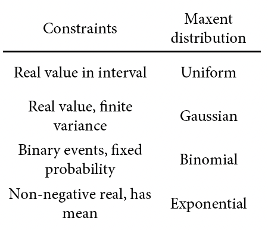
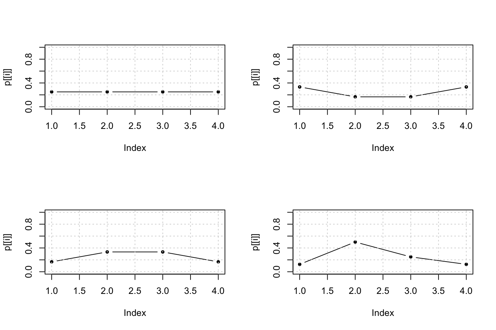
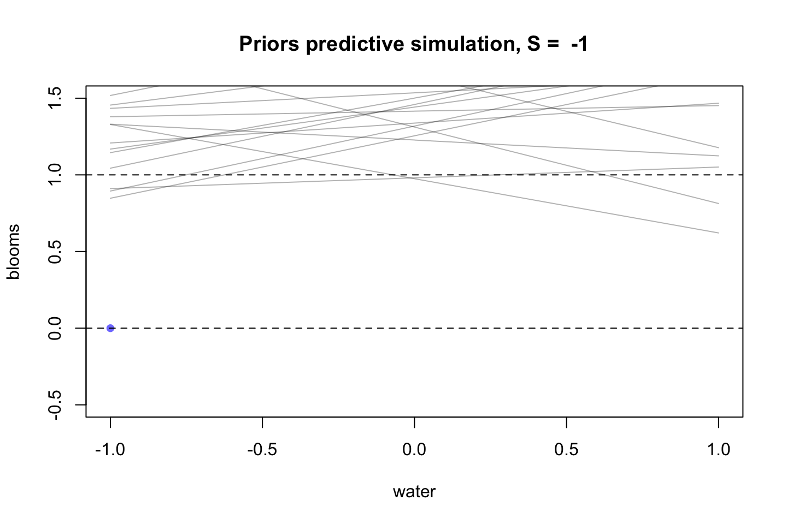
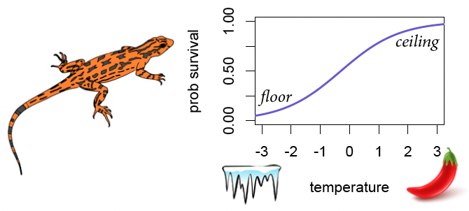
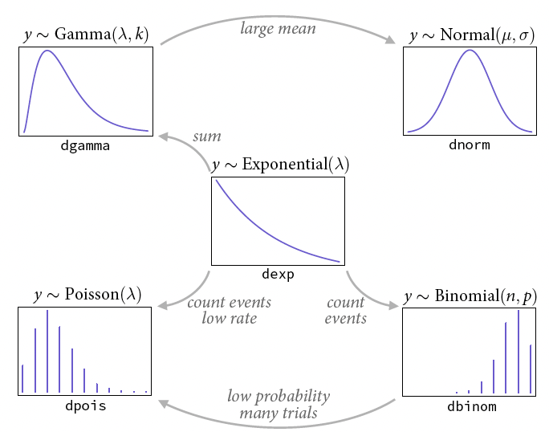
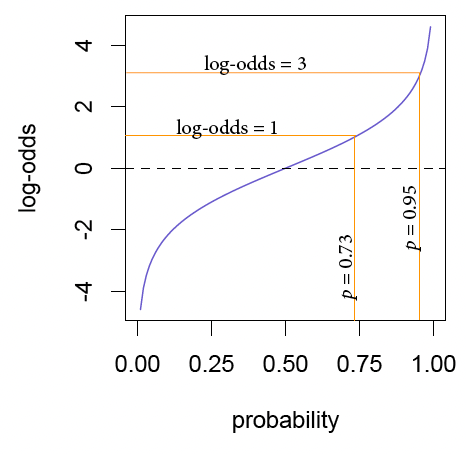
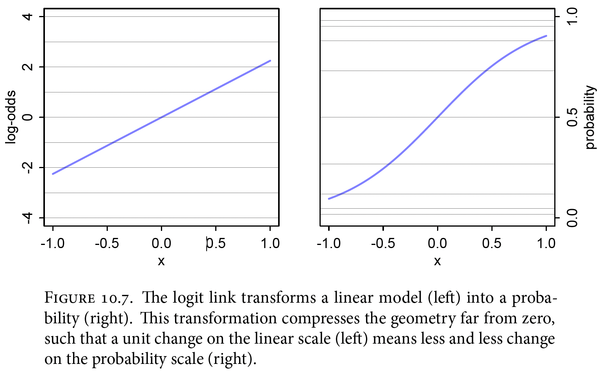
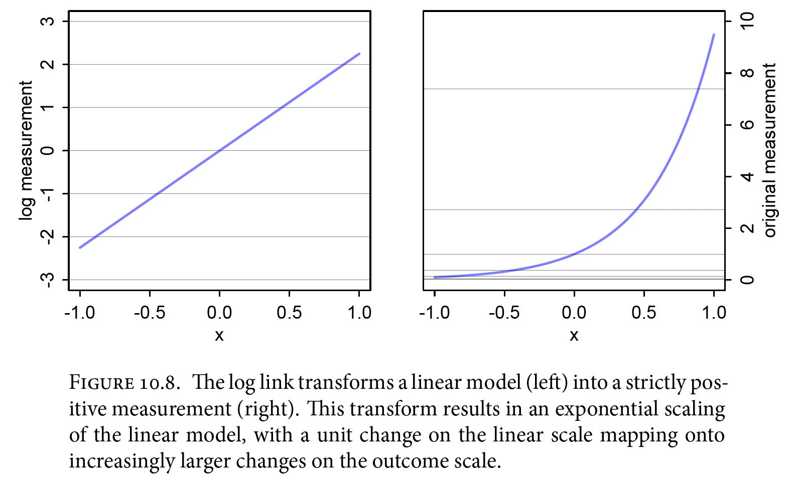

11 Big Entropy and the Generalized Linear Model
11.1 Maximum Entropy
It can be beneficiary to find a distribution that can as many of the possible outcomes as possible. We call such distributions maximum entropy, as this is the distribution that can be found the most ways.
Thus we want to pick the flattest distribution within the constraints that we are having. A constraint on the mean or the variance. Here are some examples of the outcome distribution (maximum entropy distribubtion) given the constraint:

That also implies, that the maximum entropy distribution is the most conservative.
What is our goal?
Connect linear model to outcome variable.
Our model is still geocentric
Strategy:
Pick an outcome distriubtion. Notice that you cannot look at the data before specifying the model. As we want to use our knowledge to build the model, hence we dont want to be perceived by the data. Always go for maximum entropy. The following are some good guidelines (in in the section 11.2.1):
Distances and durations: exponential, gamma (survival or event history)
Counts: Poisson, binomial, multinomial, geometric.
Monsters: Ranks and ordered categories.
Mixtures: Bbeta/binomial, gamma-Poisson, zero-inflated process, occupancy models.
Model its parameters using links to linear models
In a linear model, we see that the outcome is the same scale as the input, e.g., predicting height will still be height.
Although if you want to connect a linear model to a probability of success (p), then it is unitless. Thus you may have an input of a count, but an output as a probability.
Notice that in this case we substitute $\mu$ with a $p$. As the outcome of a model will not be on the same scale, we need a function for getting the probability. This is where the link function comes in play. Hence we will have $f(p_i) = \alpha + \beta x_i$.
Compute the posterior
- With a GLM it is harder to search for the parameters, OLS can be used, but for some reason it is not optimal. We will just use MCMC where we also can use priors. (quap works sometimes but not always, hence we will just rely on MCMC.)
We can model multivariate relationships and non/linear responses
Notice that this is the building blocks of a multilevel model.
11.1.1 Binomial
Here are some examples in a binomial scenario:
# build list of the candidate distributions
p <- list()
p[[1]] <- c(1/4,1/4,1/4,1/4)
p[[2]] <- c(2/6,1/6,1/6,2/6)
p[[3]] <- c(1/6,2/6,2/6,1/6)
p[[4]] <- c(1/8,4/8,2/8,1/8)
par(mfrow = c(2,2))
for (i in 1:4) plot(p[[i]],type = 'b',ylim = c(0,1),pch = 20) %>% grid()
We see that we have four distributions, one with even outcomes possibilities, and three with different outcome possibilities.
We can now calculate the entropy of each distritution.
sapply(p,function(p) -sum(p*log(p)))## [1] 1.386294 1.329661 1.329661 1.213008par(mfrow = c(1,1))
sapply(p,function(p) -sum(p*log(p))) %>% plot(type = 'l')
We see that the entropy is decreasing as the distribution gets less uniform
11.1.1.1 Example from the lecture
We see that the outcome scale will now impose interactions between the parameters no matter what you specify, as the outcome of a model is now condition. E.g.,

We see that the lizard can only die once and live once, the floor and ceiling effects will put the model output on a fixed scale, hence it does not matter how much we feed the lizard, if it is simply just too cold.
11.2 Generalized linear models
When we apply the principle of maximum entropy, we see that we have dealt with unreal scenarios, while attempted to create a model, most outcomes.
This results in generalized linear model. this looks the following:
\[y_i ~ Binomial(n,p_i)\]
\[f(p_i) = \alpha + \beta(x_i-\bar{x})\]
hence we see that \(\mu\) is exchanged with an \(f\). This represents a link function.
11.2.1 Meet the family
This section introduce some of the ddistributions from the exponential family, these are often widely used as they are all maximum entropy distributions given certain constraints.
We see that these are also often used in traditional statistics, although we often arrive at these in different ways.

Explanation:
We see that the exponential distribution is the core of the family.
Binomial distribution: is when we count events underlying the exp distribution. e.g., coin flips. We need n trials and p probability of a given event. Hence the expected outcome of a sequence of trials is then \(n * p\).
Poisson: it is basically the binomial where the probability of a given event is very low.
gamma: eg., lets say that you have a binomial event, that a washing machine is breaking. The probability of the machine breaking is in general low. But if we sum the probability of breaking over time, we will see that we get a gamma distribution. Hence the distribution is in this case reflecting the waiting time. If the mean is large, then it is a gaussian distribution.
Gaussian: the gamma but with a large mean.
conclusion: we see that max entropy leads to a distribution that will explain the problem at hand given the constraints, although this family of distributions are related, which is the key takeaway.
11.2.2 Linking linear models to distributions
First, lets clarify the purpose of the link function. It is effectively to map a linear function onto a non linear space of a given parameter (\(\theta\)).
In general, we are having two link functions:
logit link (log-odds). It looks the following:
\[ y_i \sim Binomial(n,p_i) \\ logit(p_i) = \alpha + \beta x_i \]
We see that the value is now linear to the logit (log-odds) of p. Hence we see that we take the probability p and map it onto the log-odds scale. Hence the model may output the log-odds, but the logit function, can map the log-odds onto the probability scale.
One can then take the inverse-link of the function, that is called the logistic.
Summary:
log-odds of the log of the odds.
We can get back to probabilities, by using the inverse link on the log-odds.
log link.
Log-odds scale vs. the probability scale:

We see that log-odds = 0, is 50% probability, while log-odds = 3 is 95% probability. Notice it is symmetric, log-odds of -3 is 5% of the time. This is important for defining priors.
The log-odds scale goes from negative to positive infinity.
The logit link:
We see that the logit link is able to transform the log-odds of the model into probability, meaning we go from a linear model to map this on a y range between 0 and 1, this is typically also called a logistic function. It can look as the following:

what are the odds of an event? It is merely the probability of an event happening divided by the probability of the event not happening. Thus this can be written with:
\[ log\frac{p_i}{1-p_i} = \alpha + \beta x_i \]
, where $p_i$ = \(p_i=\frac{exp(\alpha + \beta x_i)}{1 + exp(\alpha + \beta x_i)}\), this is also called the logistic or the inverse-logit.
The log link:
Basically this is a link function that is applied whenever an exponential relationship is being inferred / predicted. It takes the following shape:

Keep in mind that the link functions are assumptions, if they do not work well, then try other methods.
11.3 Maximum entropy priors
This is explained in the earlier sections of the chapter, the following image summarize it.
It is basically about selecting a prior that captures the distribution that can be constructed the most possible ways given the constraints.